269 images, 253 tagged, 16 untagged.
| Service slug | Images | Tech slug | Images |
|---|---|---|---|
| custom-fabrication | 104 | lighting-design | 117 |
| immersive-environments | 56 | set-scenic-assembly | 22 |
| projection-mapping | 49 | pre-visualization | 19 |
| multimedia-displays | 27 | interactive-ui-ux-design | 18 |
| led-video-wall-rentals | 25 | environmental-design | 15 |
| stage-design | 24 | staging-rigging | 14 |
| experiential-events | 20 | trade-convention-booths | 8 |
| event-production | 19 | technical-direction | 6 |
| laser-shows | 9 | media-server-playback-solutions | 5 |
| dj-equipment-rentals | 3 | drafting-detail-drawings | 5 |
| lighting-integration | 4 | ||
| av-system-integration | 3 | ||
| av-content-design | 2 | ||
| site-floor-plans | 2 | ||
| av-equipment-sourcing-rentals | 2 | ||
| realtime-content-ar-vr-xr | 1 | ||
| labor-hire-crew-roles | 1 | ||
| production-management | 1 | ||
| event-planning-logistics | 1 | ||
| 3d-animation-motion-capture | 1 |
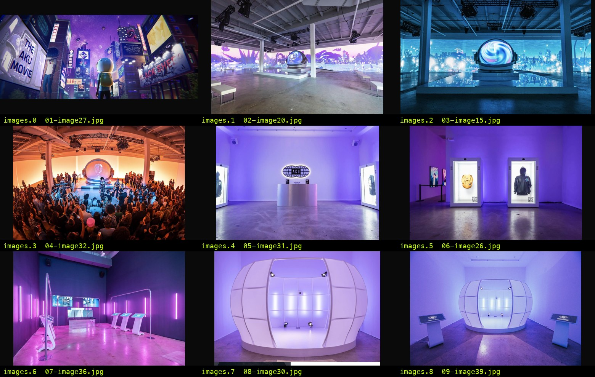
| Index | File | Services | Tech | Conf | Note |
|---|---|---|---|---|---|
| 0 | 01-image27.jpg | projection-mapping immersive-environments | environmental-design | medium | Immersive room with wall-to-wall projected AKU city scene and character figure |
| 1 | 02-image20.jpg | projection-mapping custom-fabrication immersive-environments | lighting-design | medium | Venue-wide panoramic projected wall, large helmet sculpture on pedestal, overhead fixtures |
| 2 | 03-image15.jpg | projection-mapping custom-fabrication | lighting-design | medium | Dark room, panoramic blue cityscape wall visuals, helmet with glowing visor, visible ceiling rig |
| 3 | 04-image32.jpg | event-production stage-design | staging-rigging lighting-design | medium | Crowd facing stage with circular display, overhead truss with fixtures, orange wash |
| 4 | 05-image31.jpg | multimedia-displays custom-fabrication | lighting-design | high | Purple-lit merch room, illuminated portal display cases, central logo pedestal |
| 5 | 06-image26.jpg | multimedia-displays custom-fabrication | lighting-design | high | Two tall holographic-style portal displays showing mask and jacket, purple wash |
| 6 | 07-image36.jpg | multimedia-displays immersive-environments custom-fabrication | interactive-ui-ux-design lighting-design | high | Subway-lobby room: neon LED tubes, row of touchscreen kiosks, wall-mounted screens |
| 7 | 08-image30.jpg | custom-fabrication | lighting-design | high | Large fabricated white dome body-scanner structure with internal lighting |
| 8 | 09-image39.jpg | custom-fabrication multimedia-displays | interactive-ui-ux-design lighting-design | high | Dome body scanner flanked by two kiosk pedestals, purple wash |
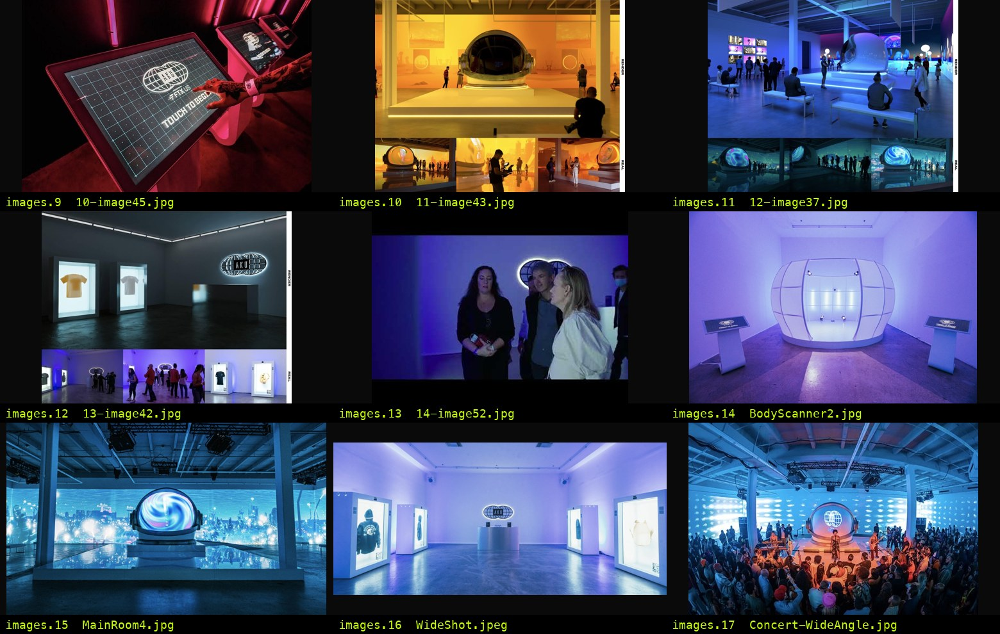
| Index | File | Services | Tech | Conf | Note |
|---|---|---|---|---|---|
| 9 | 10-image45.jpg | multimedia-displays | interactive-ui-ux-design lighting-design | high | Close-up of angled touchscreen kiosk showing 'TOUCH TO BEGIN' UI, red neon lighting |
| 10 | 11-image43.jpg | custom-fabrication immersive-environments | lighting-design environmental-design | medium | Photo collage: giant astronaut helmet installation in orange-lit room with visitors |
| 11 | 12-image37.jpg | event-production immersive-environments projection-mapping | lighting-design | medium | Collage: guests on benches in blue-lit space; lower strip shows crowd before glowing projection wall |
| 12 | 13-image42.jpg | multimedia-displays custom-fabrication | lighting-design | medium | Collage of gallery room: illuminated display cases with apparel, neon AKU globe sign |
| 13 | 14-image52.jpg | — | lighting-design | medium | Guests talking in purple-lit room; no production system beyond ambient designed lighting |
| 14 | BodyScanner2.jpg | custom-fabrication multimedia-displays | interactive-ui-ux-design lighting-design | high | Fabricated dome body scanner with flanking touchscreen kiosks, purple floor wash |
| 15 | MainRoom4.jpg | projection-mapping custom-fabrication immersive-environments | lighting-design | high | Main room: panoramic blue cityscape projected wall, helmet with glowing visor on reflective platform |
| 16 | WideShot.jpeg | multimedia-displays custom-fabrication immersive-environments | lighting-design | high | Wide gallery shot: illuminated display cases both walls, central logo pedestal, blue/purple wash |
| 17 | Concert-WideAngle.jpg | event-production stage-design multimedia-displays | lighting-design staging-rigging | high | Live concert: performers, crowd, circular logo screen, light-panel back wall, overhead truss |
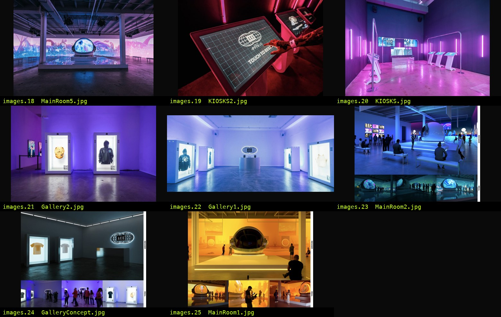
| Index | File | Services | Tech | Conf | Note |
|---|---|---|---|---|---|
| 18 | MainRoom5.jpg | projection-mapping custom-fabrication immersive-environments | lighting-design | high | Wide main room: panoramic projection walls both sides, central helmet sculpture, ceiling rig |
| 19 | KIOSKS2.jpg | multimedia-displays | interactive-ui-ux-design lighting-design | high | Close-up touchscreen kiosk with 'TOUCH TO BEGIN' UI, red neon tubes |
| 20 | KIOSKS.jpg | multimedia-displays immersive-environments custom-fabrication | interactive-ui-ux-design lighting-design | high | Subway-lobby: neon purple tube lighting, kiosk row, wall-mounted screens |
| 21 | Gallery2.jpg | multimedia-displays custom-fabrication | lighting-design | high | Two portal displays showing gold mask and jacket in purple-lit gallery |
| 22 | Gallery1.jpg | multimedia-displays custom-fabrication immersive-environments | lighting-design | high | Gallery room wide: illuminated apparel display cases, central AKU logo pedestal, blue wash |
| 23 | MainRoom2.jpg | event-production immersive-environments projection-mapping | lighting-design | medium | Collage: audience in blue-lit space; lower strip crowd silhouettes against glowing wall visuals |
| 24 | GalleryConcept.jpg | multimedia-displays custom-fabrication | lighting-design | medium | Collage of gallery concept: display cases with apparel, neon AKU sign (may include renders) |
| 25 | MainRoom1.jpg | custom-fabrication immersive-environments | lighting-design environmental-design | medium | Collage: giant helmet installation in orange-lit room with visitors |
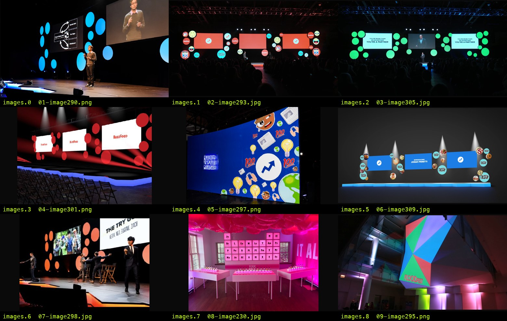
| Index | File | Services | Tech | Conf | Note |
|---|---|---|---|---|---|
| 0 | 01-image290.png | stage-design | lighting-design | high | speaker on custom stage, large screen, glowing blue circular orbs |
| 1 | 02-image293.jpg | stage-design event-production | lighting-design | medium | wide shot of stage with multiple screens framed by colorful circular discs, audience |
| 2 | 03-image305.jpg | stage-design event-production | lighting-design staging-rigging | medium | stage with green-lit orbs and screens, overhead truss visible |
| 3 | 04-image301.png | stage-design event-production | lighting-design | medium | empty venue, stage with BuzzFeed screens, red spot beams, red disc wall |
| 4 | 05-image297.png | multimedia-displays | — | medium | large curved presentation screen showing BuzzFeed content |
| 5 | 06-image309.jpg | stage-design | pre-visualization | high | 3D pre-viz render of stage layout with screens and orbs |
| 6 | 07-image298.jpg | stage-design event-production | — | medium | live performers on stage with screens and orange orb backdrop |
| 7 | 08-image230.jpg | experiential-events custom-fabrication | lighting-design | medium | pink-lit activation room with periodic-table wall installation |
| 8 | 09-image295.png | projection-mapping custom-fabrication | — | medium | faceted geometric sculptural structure with colorful projection-mapped facets |
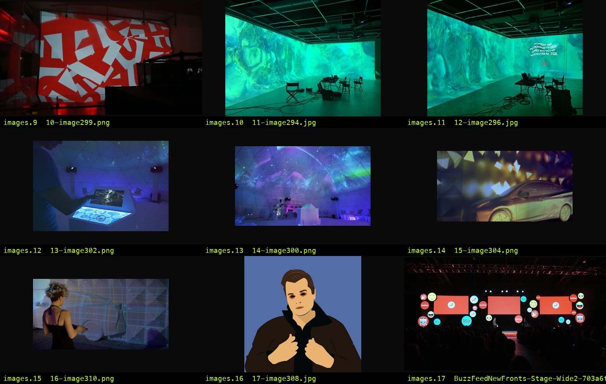
| Index | File | Services | Tech | Conf | Note |
|---|---|---|---|---|---|
| 9 | 10-image299.png | projection-mapping | — | medium | large wall with red/white projected graphic in dark venue |
| 10 | 11-image294.jpg | projection-mapping immersive-environments | — | medium | room with green marbled projection covering walls, chairs inside |
| 11 | 12-image296.jpg | projection-mapping immersive-environments | — | medium | same immersive room, green projection with text on wall |
| 12 | 13-image302.png | multimedia-displays | interactive-ui-ux-design | medium | glowing interactive touch table and pedestal displays in blue room |
| 13 | 14-image300.png | immersive-environments projection-mapping | lighting-design | medium | purple/blue immersive lounge with projections and geodesic structure |
| 14 | 15-image304.png | projection-mapping | — | high | car with projection-mapped geometric visuals, mapped wall behind |
| 15 | 16-image310.png | multimedia-displays | interactive-ui-ux-design | medium | woman gesturing at interactive wall showing her silhouette |
| 16 | 17-image308.jpg | — | av-content-design | medium | 2D animated character illustration (content frame, no hardware) |
| 17 | BuzzFeedNewFronts-Stage-Wide2-703a6f28.jpg | stage-design event-production | lighting-design | medium | wide audience shot of stage with screens and colorful mapped orbs |
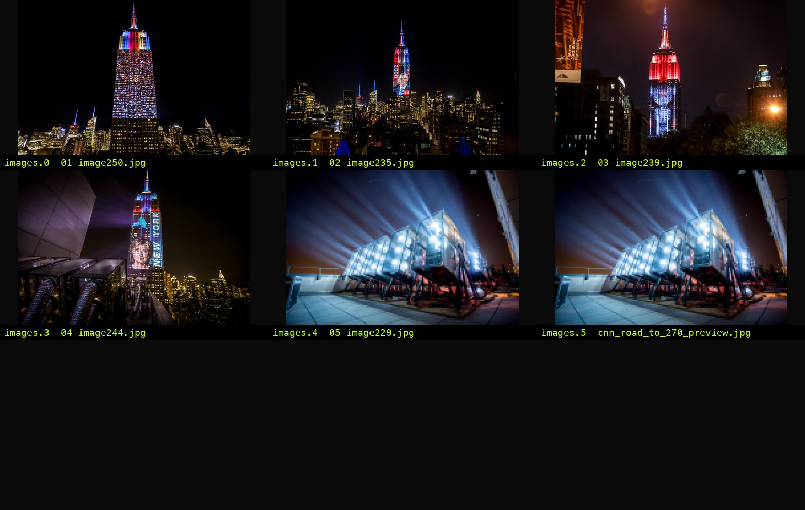
| Index | File | Services | Tech | Conf | Note |
|---|---|---|---|---|---|
| 0 | 01-image250.jpg | projection-mapping | — | high | Empire State Building facade covered in projected red/white/blue election-map content at night |
| 1 | 02-image235.jpg | projection-mapping | — | high | CNN 'Road to 270' graphics projected on Empire State Building above skyline |
| 2 | 03-image239.jpg | projection-mapping | — | high | Empire State Building projection-mapped in red/white/blue patterns at night |
| 3 | 04-image244.jpg | projection-mapping | — | high | Projected face and 'NEW YORK' text on building, rooftop projector enclosures with ducting in foreground |
| 4 | 05-image229.jpg | projection-mapping | — | high | Rooftop array of large projector enclosures emitting bright projection beams into night sky |
| 5 | cnn_road_to_270_preview.jpg | projection-mapping | — | high | Duplicate of index 4: rooftop projector rig firing light beams |
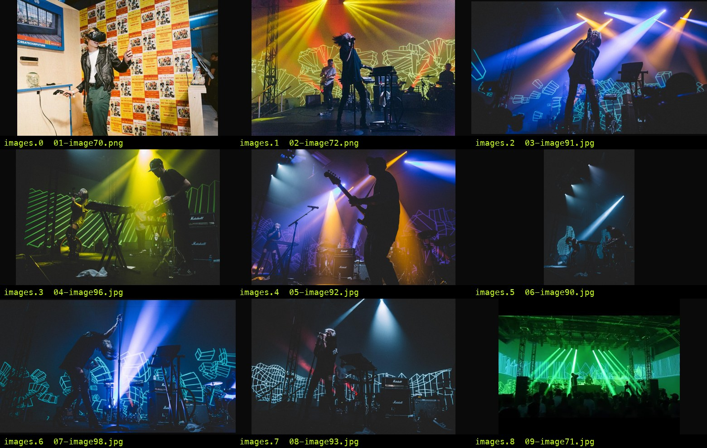
| Index | File | Services | Tech | Conf | Note |
|---|---|---|---|---|---|
| 0 | 01-image70.png | experiential-events | realtime-content-ar-vr-xr interactive-ui-ux-design | medium | Guest wearing VR headset with hand controllers at interactive avatar station; branded backdrop and wall screen |
| 1 | 02-image72.png | projection-mapping stage-design | lighting-design | high | Band on stage with geometric projection-mapped cyc wall and yellow/orange beam lighting |
| 2 | 03-image91.jpg | projection-mapping stage-design | lighting-design | high | Singer silhouette against blue/orange beams with wireframe projection content on rear wall |
| 3 | 04-image96.jpg | projection-mapping stage-design | lighting-design | medium | Keyboardist and drummer under green/yellow beams; geometric line content on rear wall (projection vs laser ambiguous) |
| 4 | 05-image92.jpg | projection-mapping stage-design | lighting-design | high | Guitarist silhouette with blue/orange spot beams and projection-mapped wall content |
| 5 | 06-image90.jpg | stage-design | lighting-design | medium | Dark stage moment with single blue spot beam on performer; wall content barely visible |
| 6 | 07-image98.jpg | projection-mapping stage-design | lighting-design | high | Performer under blue wash with projection-mapped wireframe cubes across rear wall |
| 7 | 08-image93.jpg | projection-mapping stage-design | lighting-design | high | Wide stage shot, red/white spots, geometric projection content wrapping both walls |
| 8 | 09-image71.jpg | projection-mapping stage-design immersive-environments | lighting-design staging-rigging | medium | Full-room wide shot: overhead truss grid, green beam show, wraparound projection wall, crowd silhouettes |
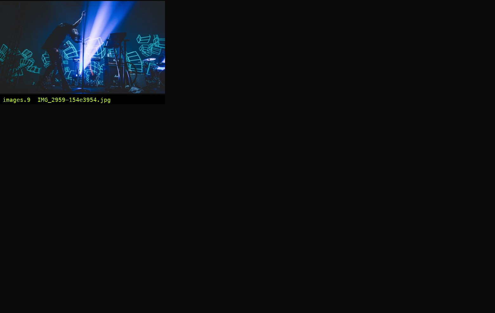
| Index | File | Services | Tech | Conf | Note |
|---|---|---|---|---|---|
| 9 | IMG_2959-154e3954.jpg | projection-mapping stage-design | lighting-design | high | Performer at mic stand under blue spot with projection-mapped wireframe cubes on rear wall |
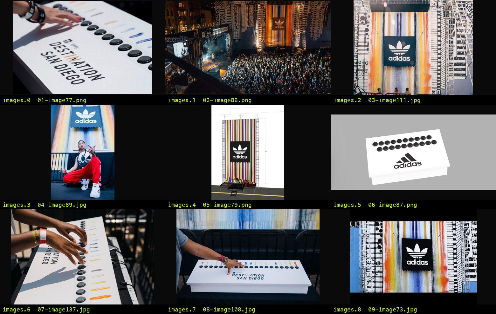
| Index | File | Services | Tech | Conf | Note |
|---|---|---|---|---|---|
| 0 | 01-image77.png | custom-fabrication | interactive-ui-ux-design | high | Close-up of custom-built button controller console, hand pressing a button |
| 1 | 02-image86.png | led-video-wall-rentals stage-design event-production | staging-rigging lighting-design | high | Night concert: stage with truss towers, LED IMAG screen, stage lighting, painted canvas facade, large crowd |
| 2 | 03-image111.jpg | custom-fabrication | staging-rigging | high | 40-ft painted canvas structure with Adidas logo, scaffold towers both sides |
| 3 | 04-image89.jpg | custom-fabrication | — | medium | Performer posing in front of the painted canvas structure (backdrop clearly visible) |
| 4 | 05-image79.png | — | pre-visualization | high | 3D render/pre-viz of the canvas tower structure with colorful paint stripes |
| 5 | 06-image87.png | — | pre-visualization | high | 3D product render of the custom button controller on gray background |
| 6 | 07-image137.jpg | custom-fabrication | interactive-ui-ux-design | high | Hands pressing buttons on custom controller console, paint color strips, truss behind |
| 7 | 08-image108.jpg | custom-fabrication | interactive-ui-ux-design | high | Participant pressing button on Destination controller, painted canvas behind |
| 8 | 09-image73.jpg | custom-fabrication | staging-rigging | high | Close-up of painted canvas with drips, Adidas logo, scaffold structure visible |
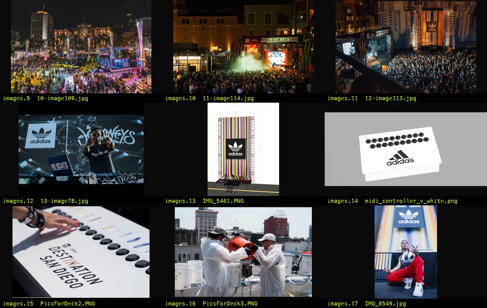
| Index | File | Services | Tech | Conf | Note |
|---|---|---|---|---|---|
| 9 | 10-image109.jpg | event-production experiential-events | lighting-design staging-rigging | medium | Festival-wide night shot: uplit sculptural columns, truss with illuminated sign, tents, crowd, colored washes |
| 10 | 11-image114.jpg | led-video-wall-rentals stage-design event-production | lighting-design | medium | Concert stage at night with LED screen, haze and stage lighting, branded banner, crowd |
| 11 | 12-image113.jpg | led-video-wall-rentals stage-design event-production | staging-rigging lighting-design | high | Night concert: stage with truss towers, LED IMAG screen, stage lighting, painted canvas facade, large crowd |
| 12 | 13-image78.jpg | led-video-wall-rentals dj-equipment-rentals | av-content-design | high | DJ at decks/mixer in front of large LED wall showing branded Adidas/Journeys motion graphics |
| 13 | IMG_5461.PNG | — | pre-visualization | high | 3D render/pre-viz of the canvas tower structure (same render as index 4) |
| 14 | midi_controller_v_white.png | — | pre-visualization | high | 3D product render of the custom button controller (same render as index 5) |
| 15 | PicsForDeck2.PNG | custom-fabrication | interactive-ui-ux-design | high | Close-up of custom button controller console, hand pressing a button (same photo as index 0) |
| 16 | PicsForDeck3.PNG | — | labor-hire-crew-roles | medium | Crew in protective suits pouring/mixing paint on rooftop during install prep |
| 17 | IMG_8549.jpg | custom-fabrication | — | medium | Performer posing in front of the painted canvas structure (same photo as index 3) |
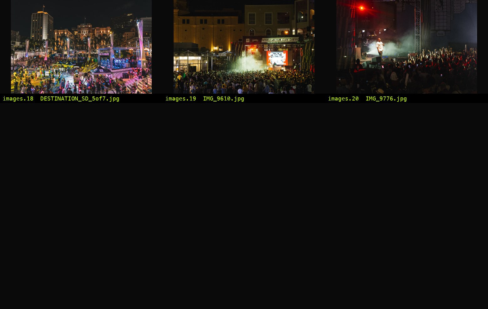
| Index | File | Services | Tech | Conf | Note |
|---|---|---|---|---|---|
| 18 | DESTINATION_SD_5of7.jpg | event-production experiential-events | lighting-design staging-rigging | medium | Festival-wide night shot: uplit columns, truss with illuminated sign, tents, crowd (same photo as index 9) |
| 19 | IMG_9610.jpg | led-video-wall-rentals stage-design event-production | lighting-design | medium | Concert stage at night with LED screen, haze and stage lighting, branded banner, crowd (same photo as index 10) |
| 20 | IMG_9776.jpg | event-production | lighting-design | medium | Performer on stage in red wash and haze, crowd with hands up; no hardware clearly visible |
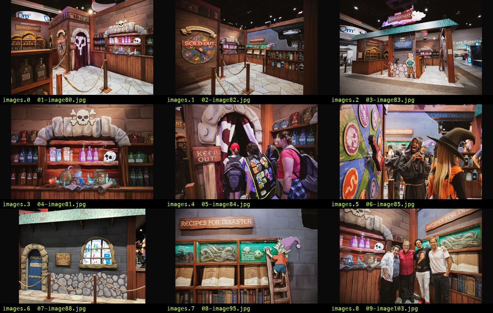
| Index | File | Services | Tech | Conf | Note |
|---|---|---|---|---|---|
| 0 | 01-image80.jpg | custom-fabrication immersive-environments | set-scenic-assembly trade-convention-booths | high | Interior of themed 'poison shop' booth: scenic stone archway, wood shelving with prop potions, rope queue |
| 1 | 02-image82.jpg | custom-fabrication immersive-environments | set-scenic-assembly trade-convention-booths | high | Booth interior corridor with themed shelving, 'Sold Out' prize wheel, stanchions |
| 2 | 03-image83.jpg | custom-fabrication immersive-environments | set-scenic-assembly trade-convention-booths | high | Wide exterior of fabricated Disenchantment booth on convention floor, hanging header sign, character cutouts |
| 3 | 04-image81.jpg | custom-fabrication | set-scenic-assembly | high | Close-up of scenic shelving with prop bottles, skull decor, faux-stone valance |
| 4 | 05-image84.jpg | custom-fabrication experiential-events | set-scenic-assembly | medium | Attendees entering scenic 'Keep Out' archway of booth walkthrough |
| 5 | 06-image85.jpg | custom-fabrication experiential-events | — | medium | Costumed performers (reaper, witch) in front of booth's scenic spinning-wheel backdrop |
| 6 | 07-image88.jpg | custom-fabrication | set-scenic-assembly trade-convention-booths | high | Scenic booth wall: faux-stone facade, 'No Entry' door, backlit printed window graphic, 'Help Wanted' sign |
| 7 | 08-image95.jpg | custom-fabrication | set-scenic-assembly | high | 'Recipes for Disaster' scenic bookshelf wall with printed graphics and character cutout on ladder |
| 8 | 09-image103.jpg | custom-fabrication | trade-convention-booths | medium | Group photo of team in front of booth's scenic shelving interior |
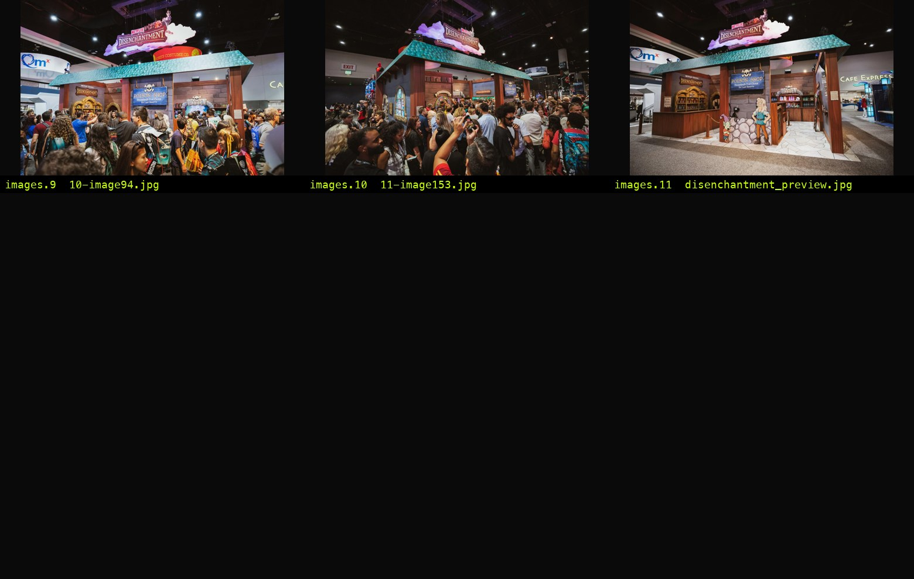
| Index | File | Services | Tech | Conf | Note |
|---|---|---|---|---|---|
| 9 | 10-image94.jpg | custom-fabrication experiential-events | set-scenic-assembly trade-convention-booths | high | Wide shot of fabricated booth with large Comic-Con crowd, header sign |
| 10 | 11-image153.jpg | custom-fabrication experiential-events | set-scenic-assembly trade-convention-booths | high | Crowd queued at fabricated Disenchantment booth exterior |
| 11 | disenchantment_preview.jpg | custom-fabrication immersive-environments | set-scenic-assembly trade-convention-booths | high | Clean wide exterior of fabricated booth, header sign, 'Poison Shop' hanging sign, character cutouts |
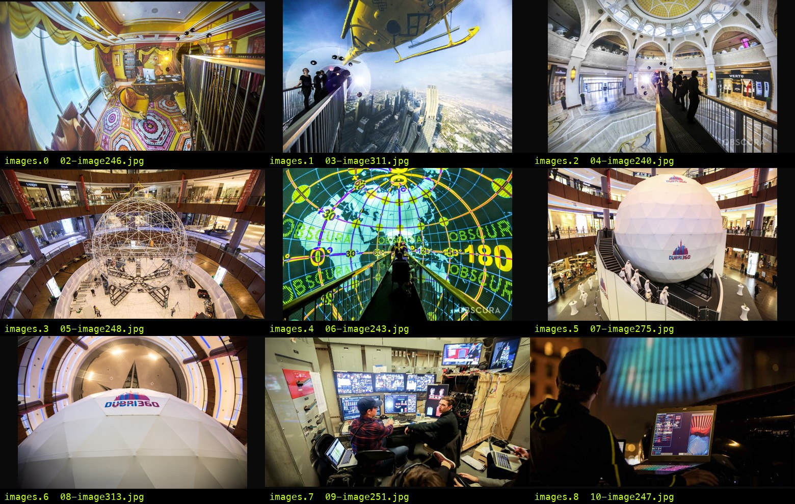
| Index | File | Services | Tech | Conf | Note |
|---|---|---|---|---|---|
| 0 | 02-image246.jpg | — | — | high | 360-degree content still of ornate interior, no production system visible |
| 1 | 03-image311.jpg | — | — | high | 360 content frame: helicopter over city, people at railing; no production hardware |
| 2 | 04-image240.jpg | — | — | high | 360 content still of mall interior with visitors, no production system |
| 3 | 05-image248.jpg | custom-fabrication | set-scenic-assembly | high | large geodesic wireframe sphere structure under construction in mall atrium |
| 4 | 06-image243.jpg | projection-mapping immersive-environments | — | high | projected grid/map content across spherical theatre interior |
| 5 | 07-image275.jpg | custom-fabrication experiential-events | — | high | branded white spherical theatre structure installed in mall |
| 6 | 08-image313.jpg | custom-fabrication | — | high | fabricated DUBAI360-branded dome structure in mall corridor |
| 7 | 09-image251.jpg | — | technical-direction media-server-playback-solutions | high | crew at control desk with wall of video monitors |
| 8 | 10-image247.jpg | — | media-server-playback-solutions technical-direction | medium | operator at laptop/console running playback, projected content behind |
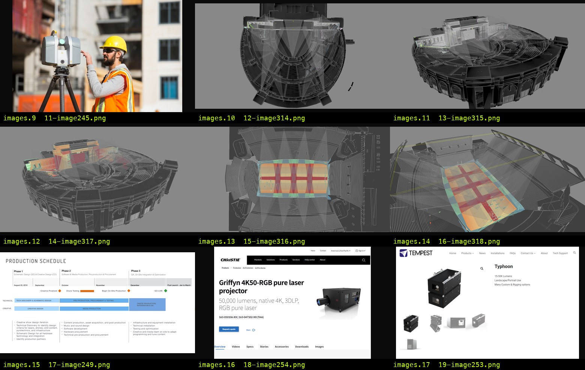
| Index | File | Services | Tech | Conf | Note |
|---|---|---|---|---|---|
| 9 | 11-image245.png | — | site-floor-plans | medium | surveyor operating 3D laser scanner on tripod (site survey) |
| 10 | 12-image314.png | — | pre-visualization | high | CAD wireframe of spherical theatre with projector positions |
| 11 | 13-image315.png | — | pre-visualization | high | 3D CAD rendering of theatre structure |
| 12 | 14-image317.png | — | pre-visualization | high | 3D model with projector coverage zones |
| 13 | 15-image316.png | — | pre-visualization | high | CAD top view of projection blend layout |
| 14 | 16-image318.png | — | pre-visualization | high | CAD side view with projection coverage cones |
| 15 | 17-image249.png | — | production-management event-planning-logistics | high | production schedule / phased Gantt document |
| 16 | 18-image254.png | — | av-equipment-sourcing-rentals | medium | Christie Griffyn 4K50-RGB projector product spec page |
| 17 | 19-image253.png | — | av-equipment-sourcing-rentals | medium | Tempest Typhoon projector enclosure product page |
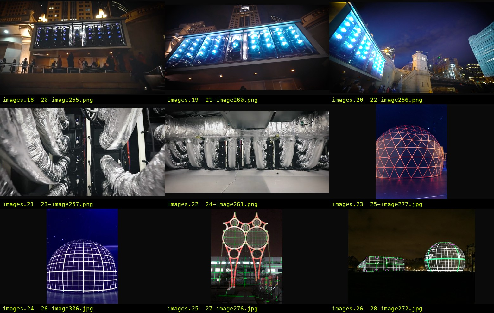
| Index | File | Services | Tech | Conf | Note |
|---|---|---|---|---|---|
| 18 | 20-image255.png | — | av-system-integration | medium | glass enclosure housing array of projectors/fixtures at night |
| 19 | 21-image260.png | — | av-system-integration | medium | multi-projector array firing blue inside weatherproof enclosure |
| 20 | 22-image256.png | — | av-system-integration | medium | rooftop enclosure with lit projector array, city at night |
| 21 | 23-image257.png | — | — | high | insulated HVAC ductwork backstage, no taggable production system |
| 22 | 24-image261.png | — | — | high | rows of silver ventilation ducts in technical space |
| 23 | 25-image277.jpg | custom-fabrication | lighting-design | medium | geodesic dome outlined in red LED lighting at night |
| 24 | 26-image306.jpg | — | lighting-design | high | geodesic dome with white/blue LED grid illumination |
| 25 | 27-image276.jpg | projection-mapping | — | high | building projection test: alignment grid and giant sunglasses graphic |
| 26 | 28-image272.jpg | projection-mapping | — | high | two structures with projected green alignment grids at night |
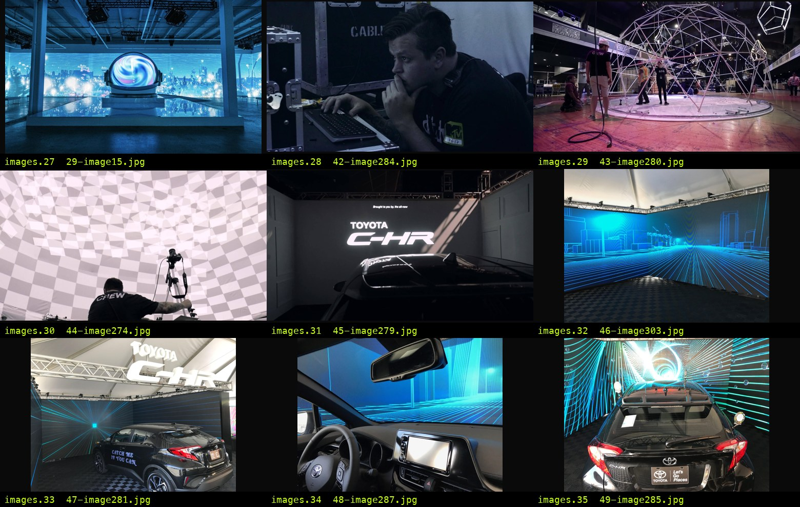
| Index | File | Services | Tech | Conf | Note |
|---|---|---|---|---|---|
| 27 | 29-image15.jpg | led-video-wall-rentals immersive-environments | — | high | large curved LED wall with cityscape content, reflective floor |
| 28 | 42-image284.jpg | — | technical-direction media-server-playback-solutions | medium | operator at keyboard beside equipment rack |
| 29 | 43-image280.jpg | custom-fabrication | set-scenic-assembly | high | crew assembling geodesic dome frame on event floor |
| 30 | 44-image274.jpg | projection-mapping | — | medium | checkerboard projection calibration pattern on curved wall, crew filming |
| 31 | 45-image279.jpg | projection-mapping | staging-rigging | high | Toyota C-HR reveal with projected logo, overhead truss visible |
| 32 | 46-image303.jpg | projection-mapping immersive-environments | staging-rigging | high | immersive room with blue perspective grid projected on walls/floor, truss overhead |
| 33 | 47-image281.jpg | laser-shows | lighting-design | high | green laser beams radiating over Toyota C-HR under tent |
| 34 | 48-image287.jpg | led-video-wall-rentals immersive-environments | — | medium | car interior view facing blue LED tunnel walls |
| 35 | 49-image285.jpg | led-video-wall-rentals immersive-environments | — | high | Toyota car inside LED tunnel with swirling cyan content |
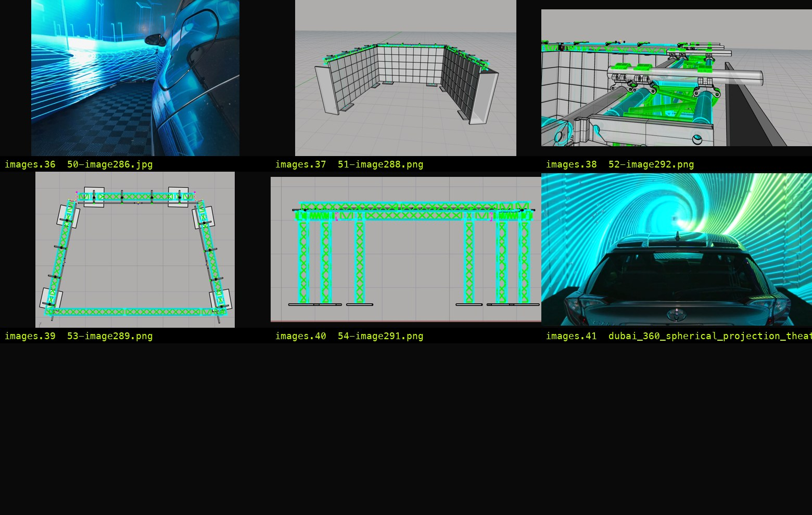
| Index | File | Services | Tech | Conf | Note |
|---|---|---|---|---|---|
| 36 | 50-image286.jpg | led-video-wall-rentals | — | high | car beside curved blue LED wall |
| 37 | 51-image288.png | — | pre-visualization | high | CAD render of curved LED wall panel layout |
| 38 | 52-image292.png | — | drafting-detail-drawings pre-visualization | high | CAD detail of LED panel mounting/rigging mechanism |
| 39 | 53-image289.png | — | drafting-detail-drawings | high | CAD drawing of truss arch structure |
| 40 | 54-image291.png | — | drafting-detail-drawings | high | CAD elevation of truss gantry |
| 41 | dubai_360_spherical_projection_theatre_preview.png | led-video-wall-rentals immersive-environments | — | high | Toyota SUV in front of cyan swirling LED tunnel (preview image) |
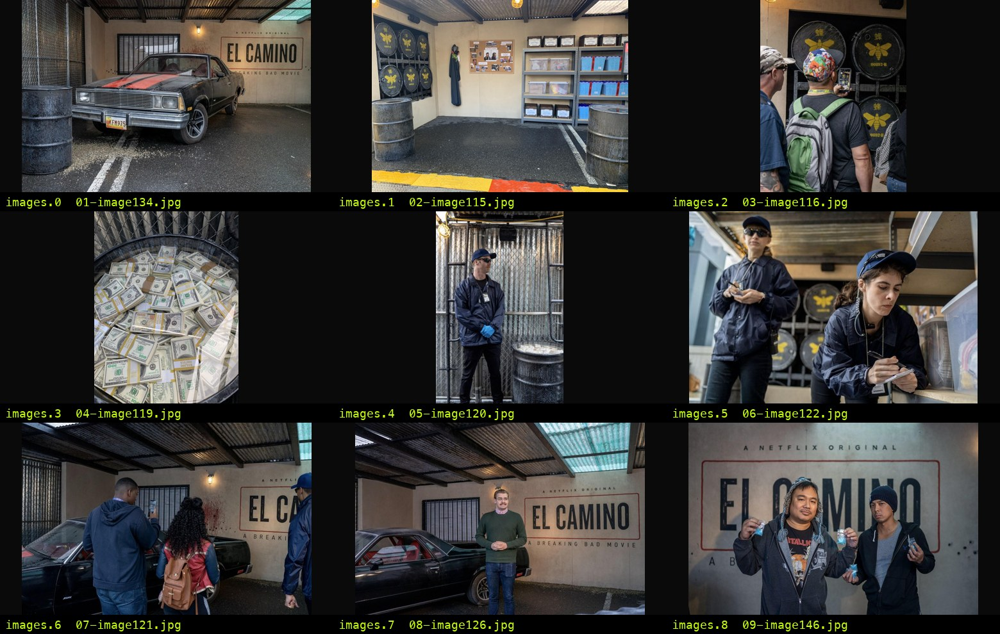
| Index | File | Services | Tech | Conf | Note |
|---|---|---|---|---|---|
| 0 | 01-image134.jpg | custom-fabrication experiential-events | set-scenic-assembly | high | Scenic garage set with El Camino car, branded wall, barrels, chain-link |
| 1 | 02-image115.jpg | custom-fabrication | set-scenic-assembly | high | Fabricated interior scenic set: branded barrels, prop shelving, scenic walls |
| 2 | 03-image116.jpg | custom-fabrication | — | medium | Attendees photographing branded bee-logo barrel props |
| 3 | 04-image119.jpg | custom-fabrication | — | medium | Close-up of prop money barrel scenic prop |
| 4 | 05-image120.jpg | custom-fabrication | set-scenic-assembly | medium | Costumed staff inside chain-link cage scenic set with barrel prop |
| 5 | 06-image122.jpg | custom-fabrication | — | medium | Costumed activation staff; branded barrel props visible behind |
| 6 | 07-image121.jpg | custom-fabrication experiential-events | set-scenic-assembly | high | Guests photographing car in branded garage scenic set |
| 7 | 08-image126.jpg | custom-fabrication experiential-events | set-scenic-assembly | high | Photo-op with El Camino car in fabricated branded garage set |
| 8 | 09-image146.jpg | custom-fabrication | — | medium | Guests posing at branded El Camino photo-op backdrop wall |
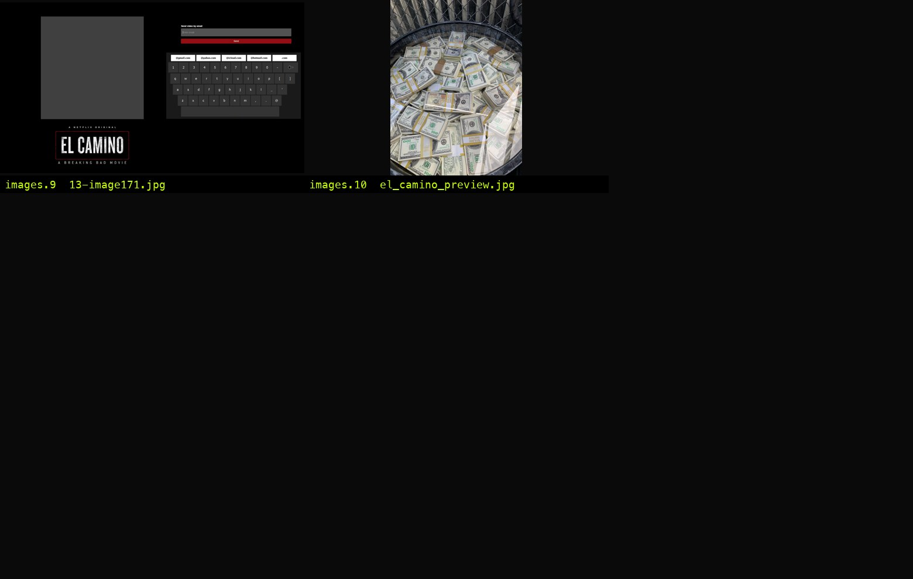
| Index | File | Services | Tech | Conf | Note |
|---|---|---|---|---|---|
| 9 | 13-image171.jpg | multimedia-displays | interactive-ui-ux-design | high | Interactive kiosk UI: 'Send video by email' touchscreen keyboard screen |
| 10 | el_camino_preview.jpg | custom-fabrication | — | medium | Close-up of prop money barrel scenic prop (preview image) |
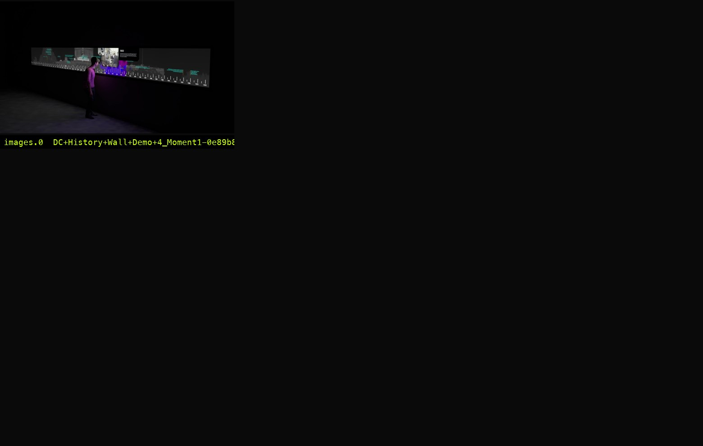
| Index | File | Services | Tech | Conf | Note |
|---|---|---|---|---|---|
| 0 | DC+History+Wall+Demo+4_Moment1-0e89b875.jpg | multimedia-displays | interactive-ui-ux-design | high | Ultra-wide interactive timeline display wall (years 1978-1998) with visitor triggering a 1993 content popup |
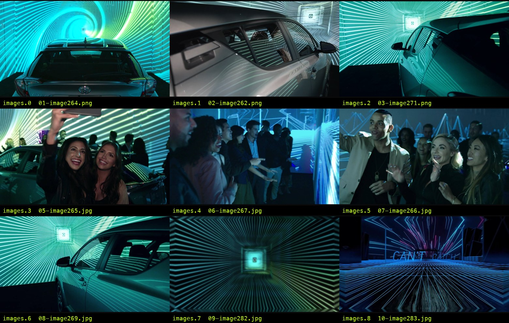
| Index | File | Services | Tech | Conf | Note |
|---|---|---|---|---|---|
| 0 | 01-image264.png | immersive-environments | lighting-design | medium | Toyota SUV inside teal immersive light tunnel with swirling patterns |
| 1 | 02-image262.png | projection-mapping | lighting-design | medium | light-line pattern wrapping car body contours; could be projection on car or tunnel reflections |
| 2 | 03-image271.png | immersive-environments | lighting-design | medium | car rear inside radiating-line light tunnel |
| 3 | 05-image265.jpg | immersive-environments | — | medium | guests taking selfie with car and light tunnel backdrop visible |
| 4 | 06-image267.jpg | — | lighting-design | medium | crowd in dark venue with blue illuminated geometric structures |
| 5 | 07-image266.jpg | — | lighting-design | medium | crowd shot with blue lit geometric structures in background |
| 6 | 08-image269.jpg | immersive-environments | lighting-design | medium | car side inside teal radiating-line light tunnel |
| 7 | 09-image282.jpg | immersive-environments | lighting-design | high | interior of immersive light tunnel converging on illuminated end screen |
| 8 | 10-image283.jpg | — | lighting-design | medium | radial blue/purple light beam installation with on-screen text; no clear laser hardware |
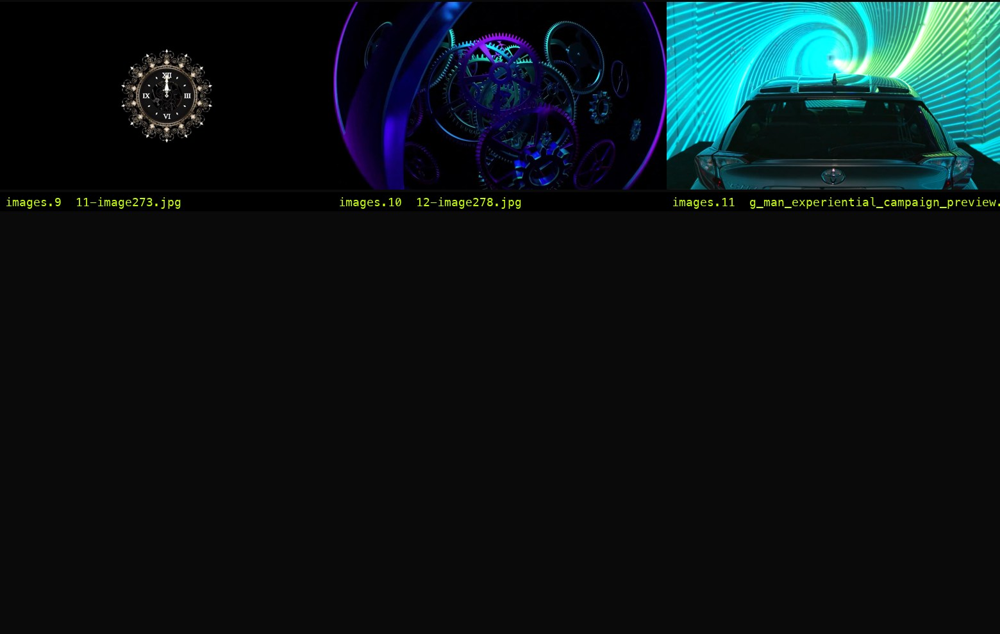
| Index | File | Services | Tech | Conf | Note |
|---|---|---|---|---|---|
| 9 | 11-image273.jpg | — | — | high | ornate clock-face graphic on black; no production system visible |
| 10 | 12-image278.jpg | — | 3d-animation-motion-capture | medium | 3D animated clockwork gears render in purple/blue |
| 11 | g_man_experiential_campaign_preview.png | immersive-environments | lighting-design | medium | Toyota SUV in teal immersive light tunnel (preview, same scene as index 0) |
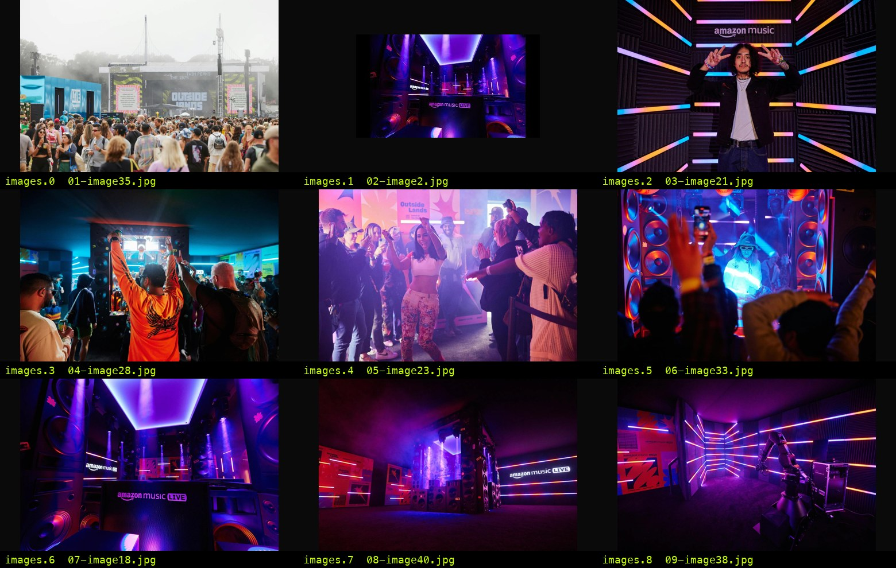
| Index | File | Services | Tech | Conf | Note |
|---|---|---|---|---|---|
| 0 | 01-image35.jpg | custom-fabrication led-video-wall-rentals | — | medium | foggy festival crowd; blue Amazon Music Live build exterior and main-stage LED screens visible |
| 1 | 02-image2.jpg | experiential-events | lighting-design | medium | purple LED-lit room with speaker stacks and neon Amazon Music Live sign |
| 2 | 03-image21.jpg | — | lighting-design | high | guest posing before wall of multicolor LED light strips with Amazon Music sign |
| 3 | 04-image28.jpg | custom-fabrication multimedia-displays | lighting-design | medium | crowd inside activation; speaker-stack wall with embedded screen, LED strips, wall displays |
| 4 | 05-image23.jpg | — | lighting-design | medium | dancing crowd under magenta/purple wash lighting, backlit Outside Lands sign |
| 5 | 06-image33.jpg | custom-fabrication | lighting-design | high | custom speaker-wall installation with blue/red LED lighting |
| 6 | 07-image18.jpg | custom-fabrication | lighting-design | high | speaker stacks, LED ceiling glow and neon Amazon Music Live sign in purple-lit room |
| 7 | 08-image40.jpg | custom-fabrication | lighting-design | high | speaker-wall DJ booth structure with moving-head fixtures, haze beams, LED accents |
| 8 | 09-image38.jpg | immersive-environments | lighting-design | medium | LED strip tunnel room with camera robot arm, red/blue lighting |
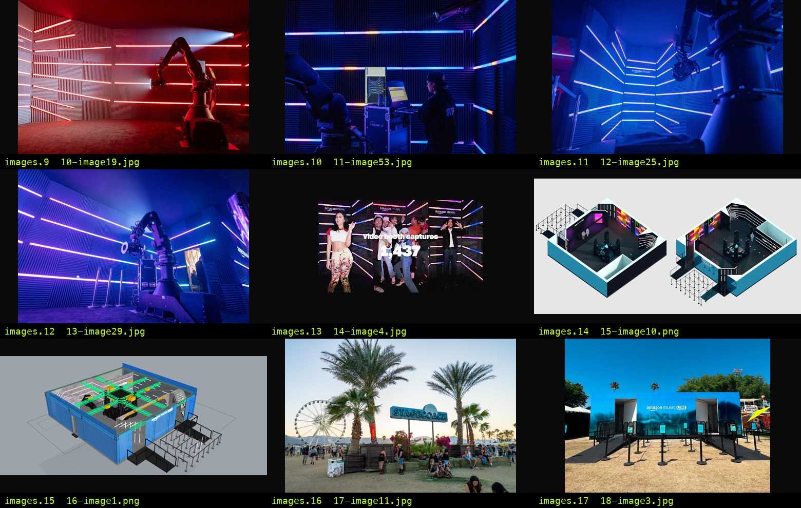
| Index | File | Services | Tech | Conf | Note |
|---|---|---|---|---|---|
| 9 | 10-image19.jpg | immersive-environments | lighting-design | medium | camera robot arm in room walled with red LED tubes, spotlight beam |
| 10 | 11-image53.jpg | immersive-environments | lighting-design | medium | robot arm, road cases and staff inside LED strip walled room |
| 11 | 12-image25.jpg | immersive-environments | lighting-design | medium | blue LED light tunnel with robot arm overhead |
| 12 | 13-image29.jpg | immersive-environments | lighting-design | medium | camera robot arm in blue LED-lined room with vertical light strips |
| 13 | 14-image4.jpg | — | lighting-design | high | group of guests posing at multicolor LED strip video-booth backdrop |
| 14 | 15-image10.png | — | pre-visualization | high | pair of 3D isometric pre-viz renders of the activation layout |
| 15 | 16-image1.png | — | pre-visualization | high | 3D render of booth exterior with LED wall zones and queue barricades |
| 16 | 17-image11.jpg | — | — | high | festival atmosphere: Stagecoach sign, palm trees, ferris wheel; no identifiable production system |
| 17 | 18-image3.jpg | custom-fabrication | — | high | reflective blue custom-built activation exterior with brand signage and entry queue |
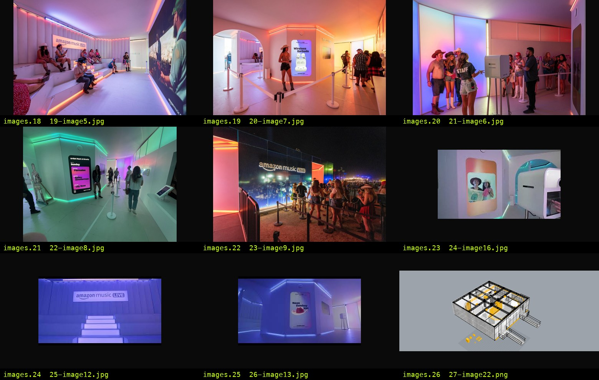
| Index | File | Services | Tech | Conf | Note |
|---|---|---|---|---|---|
| 18 | 19-image5.jpg | led-video-wall-rentals | lighting-design | high | lounge with large LED video wall playing livestream content, LED strip accent lighting |
| 19 | 20-image7.jpg | multimedia-displays custom-fabrication | lighting-design | medium | fabricated merch kiosk with large digital 'Wireless Earbuds' display, LED accent lighting |
| 20 | 21-image6.jpg | multimedia-displays | interactive-ui-ux-design lighting-design | medium | photo booth kiosk with guests, LED-lit gradient wall panels |
| 21 | 22-image8.jpg | multimedia-displays | interactive-ui-ux-design lighting-design | high | digital meet-and-greet schedule display, touchscreen tablet kiosk, LED strip accents |
| 22 | 23-image9.jpg | custom-fabrication | lighting-design | high | night exterior of reflective build with illuminated Amazon Music Live sign and LED-lit entry |
| 23 | 24-image16.jpg | multimedia-displays | lighting-design | medium | photo booth machine and wall display of captured photo, LED accent lighting |
| 24 | 25-image12.jpg | custom-fabrication | lighting-design | medium | blue LED-lit tiered seating steps with Amazon Music Live sign |
| 25 | 26-image13.jpg | multimedia-displays | lighting-design | medium | blue LED-lit nook with digital 'Neon Cowboy Hat' merch giveaway display |
| 26 | 27-image22.png | — | pre-visualization staging-rigging | medium | 3D structural model of build with overhead truss grid and access ramps |
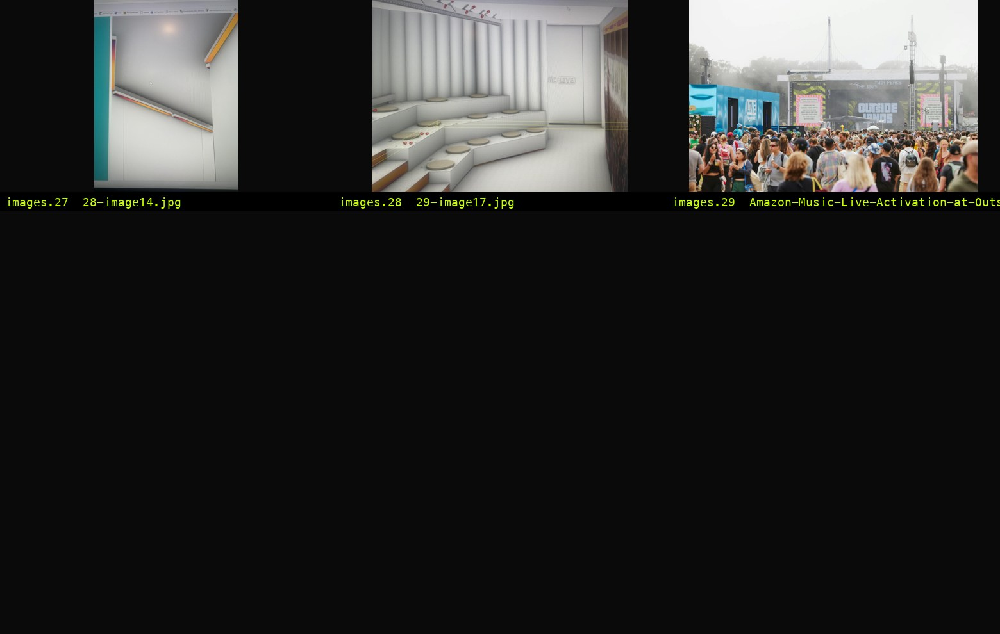
| Index | File | Services | Tech | Conf | Note |
|---|---|---|---|---|---|
| 27 | 28-image14.jpg | — | drafting-detail-drawings pre-visualization | high | screen photo of CAD model detailing wall corner LED strip extrusions |
| 28 | 29-image17.jpg | — | drafting-detail-drawings pre-visualization lighting-design | high | screen photo of CAD 3D interior model showing seating and lighting fixture layout |
| 29 | Amazon-Music-Live-Activation-at-OutsideLands-7924bb43.jpg | custom-fabrication led-video-wall-rentals | — | medium | festival crowd; blue Amazon Music Live build and Twin Peaks main stage with LED screens |
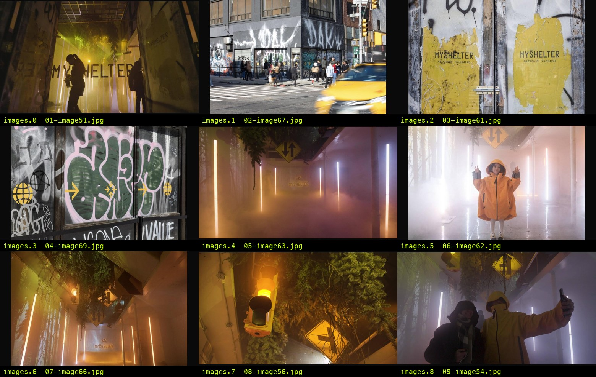
| Index | File | Services | Tech | Conf | Note |
|---|---|---|---|---|---|
| 0 | 01-image51.jpg | immersive-environments custom-fabrication | lighting-design environmental-design | medium | entrance with MYSHELTER wall signage, glowing foliage canopy, warm light, visitor silhouette |
| 1 | 02-image67.jpg | — | — | high | street exterior of bodega with crowd and taxi; no production system visible |
| 2 | 03-image61.jpg | custom-fabrication | environmental-design | medium | MYSHELTER painted signage on boarded storefront doors with graffiti |
| 3 | 04-image69.jpg | — | — | high | graffiti-covered storefront windows; no production system visible |
| 4 | 05-image63.jpg | immersive-environments | lighting-design environmental-design | high | corridor with vertical LED tubes, low fog, hanging street sign and foliage canopy |
| 5 | 06-image62.jpg | immersive-environments | lighting-design | high | visitor posing in foggy corridor lined with vertical LED tubes |
| 6 | 07-image66.jpg | immersive-environments | lighting-design environmental-design | high | LED tube corridor with hanging foliage canopy, custom sign, MYSHELTER end wall |
| 7 | 08-image56.jpg | custom-fabrication | set-scenic-assembly environmental-design | high | custom traffic-light prop and street signs with hanging foliage, warm lighting |
| 8 | 09-image54.jpg | immersive-environments | lighting-design | medium | two visitors taking selfie in foggy corridor; LED tube and street sign visible |
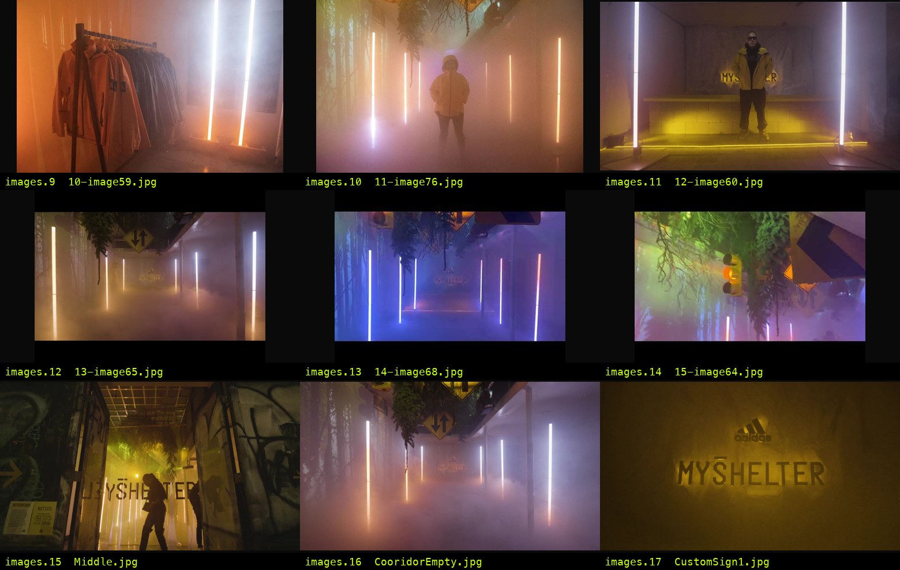
| Index | File | Services | Tech | Conf | Note |
|---|---|---|---|---|---|
| 9 | 10-image59.jpg | immersive-environments | lighting-design | high | jacket display rack with vertical LED tubes and fog |
| 10 | 11-image76.jpg | immersive-environments | lighting-design | high | person standing in foggy corridor with vertical LED tubes, amber/pink wash |
| 11 | 12-image60.jpg | immersive-environments | lighting-design | high | man on display platform with yellow LED strip edge and vertical LED tubes |
| 12 | 13-image65.jpg | immersive-environments | lighting-design environmental-design | high | empty corridor with LED tubes, fog, hanging street sign, amber wash |
| 13 | 14-image68.jpg | immersive-environments | lighting-design | high | same corridor in blue/purple lighting scene with LED tubes and hanging sign |
| 14 | 15-image64.jpg | immersive-environments custom-fabrication | lighting-design set-scenic-assembly | high | colorful scene with traffic-light prop, hanging foliage, geometric scenic shapes, LED tubes |
| 15 | Middle.jpg | immersive-environments custom-fabrication | lighting-design environmental-design | medium | entrance with MYSHELTER letters and glowing green foliage canopy, visitor |
| 16 | CooridorEmpty.jpg | immersive-environments | lighting-design environmental-design | high | empty foggy corridor with vertical LED tubes, hanging sign and foliage |
| 17 | CustomSign1.jpg | custom-fabrication | environmental-design | medium | Adidas MYSHELTER logo wall in gold/yellow |
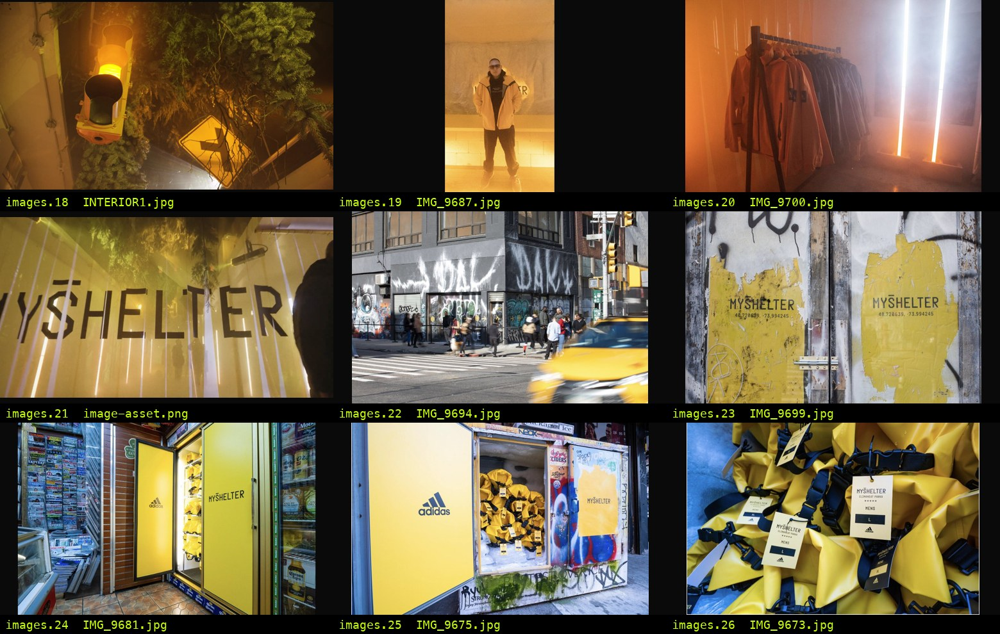
| Index | File | Services | Tech | Conf | Note |
|---|---|---|---|---|---|
| 18 | INTERIOR1.jpg | custom-fabrication | set-scenic-assembly environmental-design lighting-design | high | custom traffic-light prop, street signs and hanging foliage in warm light |
| 19 | IMG_9687.jpg | — | — | high | portrait of man in yellow jacket in amber-lit space; no identifiable system |
| 20 | IMG_9700.jpg | immersive-environments | lighting-design | high | jacket rack with vertical LED tube and fog, warm wash |
| 21 | image-asset.png | custom-fabrication | lighting-design | medium | MYSHELTER wall with LED tube light streaks; possibly a concept render |
| 22 | IMG_9694.jpg | — | — | high | street exterior of bodega with crowd and taxi (duplicate of index 1) |
| 23 | IMG_9699.jpg | custom-fabrication | environmental-design | medium | MYSHELTER painted signage on boarded doors (duplicate of index 2) |
| 24 | IMG_9681.jpg | custom-fabrication | environmental-design | medium | bodega interior with branded yellow MYSHELTER retail display panels and fridges |
| 25 | IMG_9675.jpg | custom-fabrication | — | medium | branded storefront window display with yellow jackets in refrigerated case |
| 26 | IMG_9673.jpg | — | — | high | close-up of yellow MyShelter jackets with product tags; product only |
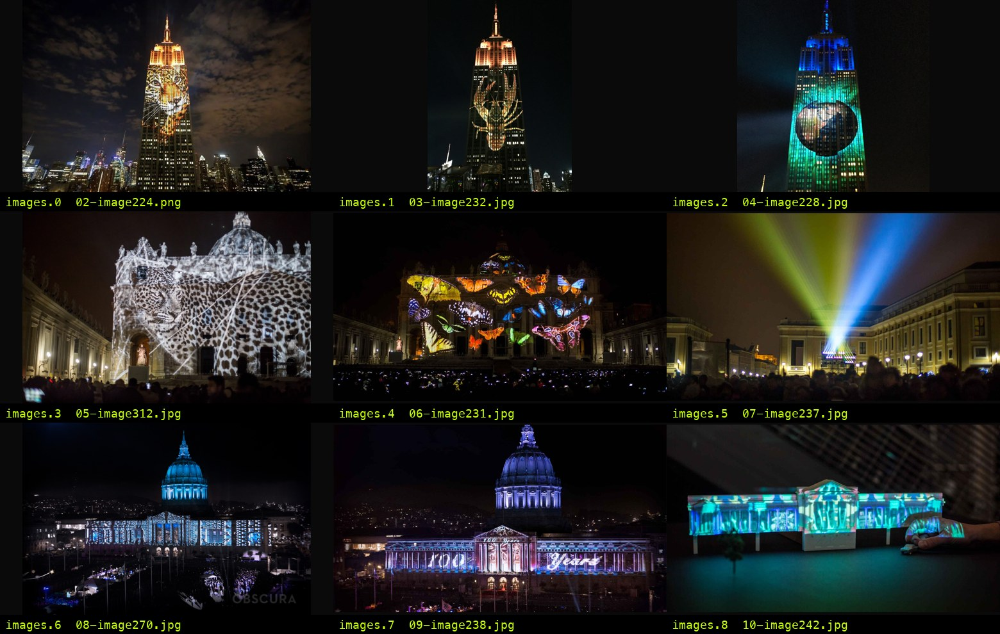
| Index | File | Services | Tech | Conf | Note |
|---|---|---|---|---|---|
| 0 | 02-image224.png | projection-mapping | — | high | Night shot of Empire State Building with warm-toned wildlife imagery projected on facade |
| 1 | 03-image232.jpg | projection-mapping | — | high | Empire State Building with large projected scorpion/insect image on facade |
| 2 | 04-image228.jpg | projection-mapping | — | high | Empire State Building lit blue/green with large projected eye image |
| 3 | 05-image312.jpg | projection-mapping experiential-events | — | medium | St. Peter's Basilica facade with white leopard projection, large crowd watching in plaza |
| 4 | 06-image231.jpg | projection-mapping experiential-events | — | medium | Building facade covered in colorful butterfly projections, crowd in foreground |
| 5 | 07-image237.jpg | projection-mapping experiential-events | — | medium | Wide projector light beams (blue/yellow) shooting over crowd and buildings at dusk |
| 6 | 08-image270.jpg | projection-mapping | — | high | St. Peter's Square colonnade and dome bathed in blue projected content (Obscura watermark) |
| 7 | 09-image238.jpg | projection-mapping | — | high | Building facade with projected text/graphics, dome lit blue above |
| 8 | 10-image242.jpg | projection-mapping | pre-visualization | medium | Projection test on small physical scale model of building, hand with toy car |
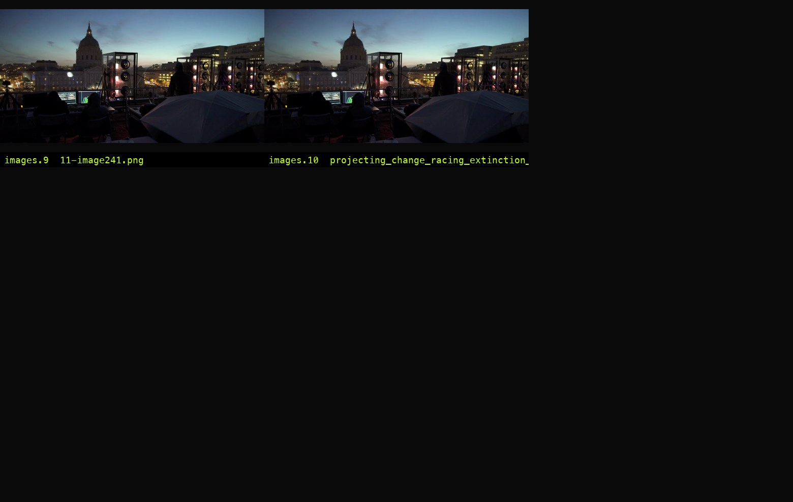
| Index | File | Services | Tech | Conf | Note |
|---|---|---|---|---|---|
| 9 | 11-image241.png | projection-mapping | media-server-playback-solutions technical-direction | medium | Rooftop projector arrays and operators at dual playback monitors overlooking projected building at dusk |
| 10 | projecting_change_racing_extinction_preview.png | projection-mapping | media-server-playback-solutions technical-direction | medium | Same rooftop projection control position: projector banks, operators at monitors, domed building at dusk |
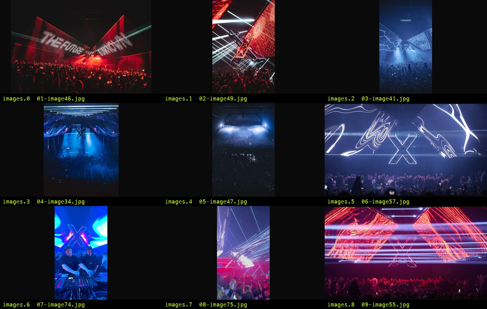
| Index | File | Services | Tech | Conf | Note |
|---|---|---|---|---|---|
| 0 | 01-image46.jpg | custom-fabrication projection-mapping laser-shows | lighting-design | high | X scenic element with projected 'THE FUTURE' text on wings, green laser beams, crowd |
| 1 | 02-image49.jpg | custom-fabrication led-video-wall-rentals laser-shows | lighting-design | medium | Red pixel-textured X wings, crossing white beams over crowd; LED vs projection ambiguous |
| 2 | 03-image41.jpg | custom-fabrication projection-mapping | lighting-design | medium | Blue-lit X with 'X DEPARTED' text and lightning graphics on wing surfaces, spotlights, crowd |
| 3 | 04-image34.jpg | stage-design custom-fabrication | lighting-design | high | Blue stage with X element center, draped ceiling treatment, crowd |
| 4 | 05-image47.jpg | stage-design event-production | staging-rigging lighting-design technical-direction | high | Flown truss X/wing rig with LED battens over crowd, FOH control consoles with operators at bottom |
| 5 | 06-image57.jpg | custom-fabrication led-video-wall-rentals | lighting-design | medium | White line-art X outline with abstract line graphics on large display surface above crowd |
| 6 | 07-image74.jpg | custom-fabrication dj-equipment-rentals | lighting-design | high | Two DJs at CDJ/mixer decks with glowing blue/pink X element behind them |
| 7 | 08-image75.jpg | laser-shows custom-fabrication | lighting-design | medium | Magenta beam/laser fans over crowd, X element with red wing visible |
| 8 | 09-image55.jpg | led-video-wall-rentals custom-fabrication laser-shows | lighting-design lighting-integration | high | Red pixel-mapped LED wings with horizontal white laser lines, X outline center, crowd |
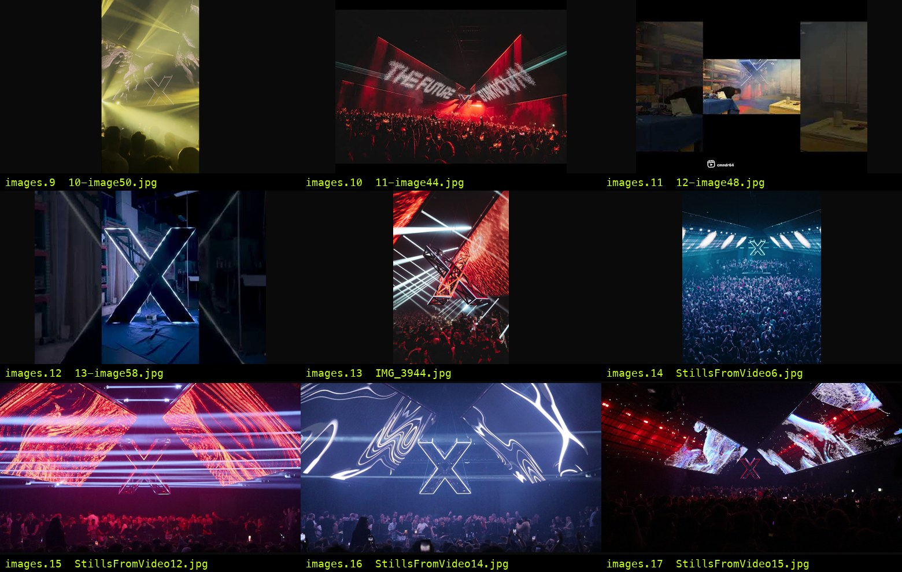
| Index | File | Services | Tech | Conf | Note |
|---|---|---|---|---|---|
| 9 | 10-image50.jpg | custom-fabrication | lighting-design | high | Lit X outline element in yellow/green wash over crowd silhouettes |
| 10 | 11-image44.jpg | custom-fabrication projection-mapping laser-shows | lighting-design | high | Duplicate of index 0: X with projected 'THE FUTURE' text, laser beams, crowd |
| 11 | 12-image48.jpg | custom-fabrication | set-scenic-assembly | medium | Workshop/warehouse scene with X element being built and tested (low-res collage still) |
| 12 | 13-image58.jpg | custom-fabrication | set-scenic-assembly lighting-integration | high | Physical X structure with edge-lit LED strips standing in fabrication workshop |
| 13 | IMG_3944.jpg | custom-fabrication led-video-wall-rentals laser-shows | lighting-design | medium | Duplicate of index 1: red pixel-textured X wings, crossing white beams, crowd |
| 14 | StillsFromVideo6.jpg | event-production custom-fabrication | lighting-design lighting-integration | medium | Wide crowd shot with LED batten strips lining ceiling, X logo element at stage end |
| 15 | StillsFromVideo12.jpg | led-video-wall-rentals custom-fabrication laser-shows | lighting-design lighting-integration | high | Duplicate of index 8: red LED wings, horizontal laser lines, X outline, crowd |
| 16 | StillsFromVideo14.jpg | custom-fabrication led-video-wall-rentals | lighting-design | medium | Duplicate of index 5: white line-art X outline with abstract graphics above crowd |
| 17 | StillsFromVideo15.jpg | led-video-wall-rentals custom-fabrication | lighting-design | high | Large angled LED screens showing glitch/red content, X logo center, crowd |
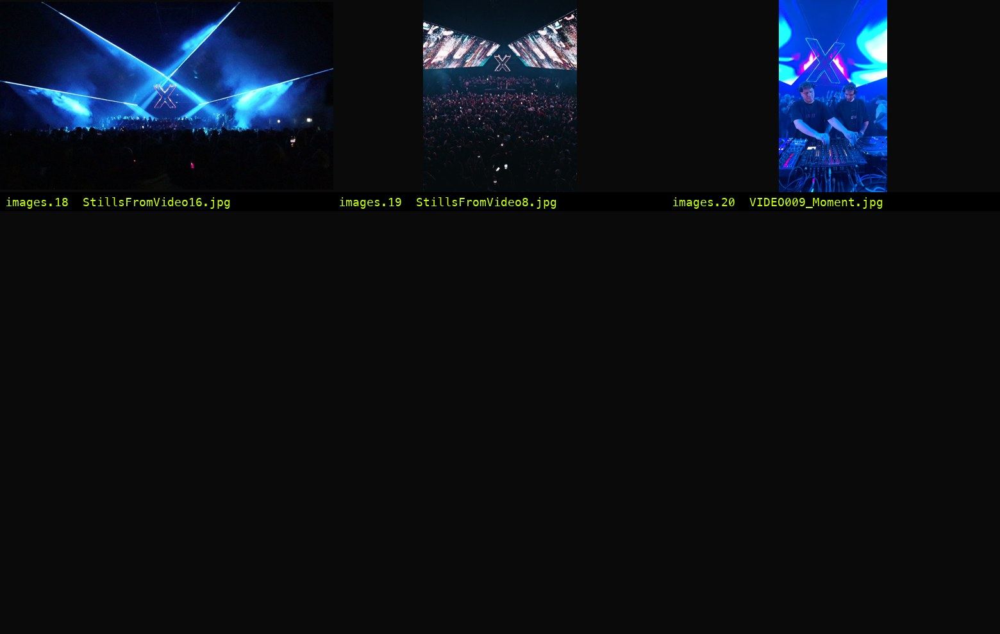
| Index | File | Services | Tech | Conf | Note |
|---|---|---|---|---|---|
| 18 | StillsFromVideo16.jpg | laser-shows custom-fabrication | lighting-design | high | Blue laser beams crossing in X formation over crowd, lit X element at center |
| 19 | StillsFromVideo8.jpg | led-video-wall-rentals custom-fabrication event-production | lighting-design | high | Wide crowd shot with two angled LED screens showing content, X logo between them |
| 20 | VIDEO009_Moment.jpg | custom-fabrication dj-equipment-rentals | lighting-design | high | Duplicate of index 6: two DJs at CDJ/mixer decks with glowing X element behind |
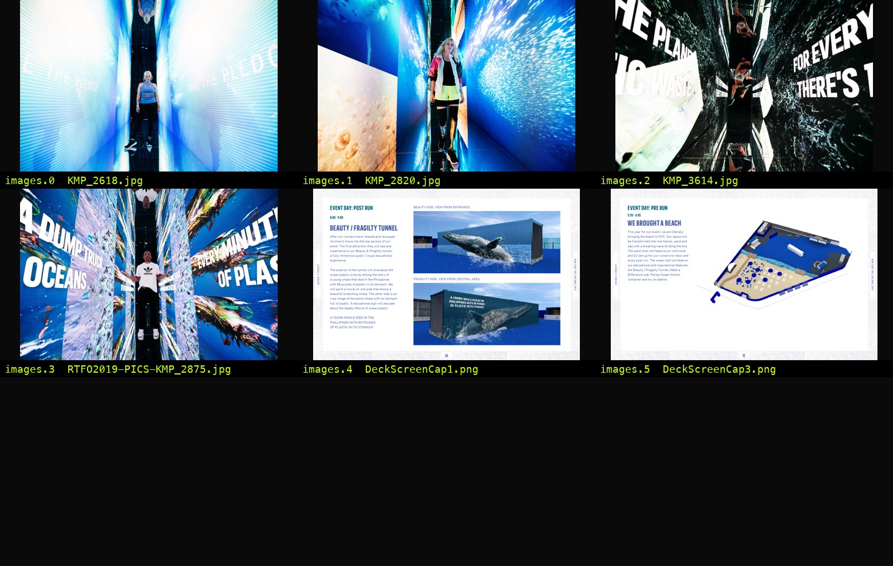
| Index | File | Services | Tech | Conf | Note |
|---|---|---|---|---|---|
| 0 | KMP_2618.jpg | led-video-wall-rentals immersive-environments | — | high | person inside infinity tunnel lined wall-to-wall with LED panels showing ocean content |
| 1 | KMP_2820.jpg | led-video-wall-rentals immersive-environments | — | high | LED infinity-mirror tunnel interior, bright blue ocean visuals on both walls |
| 2 | KMP_3614.jpg | led-video-wall-rentals immersive-environments | — | high | visitors inside LED tunnel with mirrored floor/ceiling and bold campaign text on screens |
| 3 | RTFO2019-PICS-KMP_2875.jpg | led-video-wall-rentals immersive-environments | — | high | person posing between LED walls displaying ocean/plastic-waste messaging, mirror reflections |
| 4 | DeckScreenCap1.png | — | pre-visualization | medium | design deck slide with 3D concept renders of the container exterior (whale graphic) |
| 5 | DeckScreenCap3.png | — | site-floor-plans | medium | deck slide showing isometric event site layout / floor plan of activation |
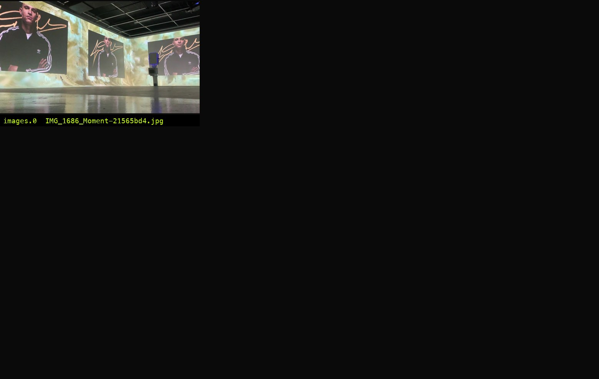
| Index | File | Services | Tech | Conf | Note |
|---|---|---|---|---|---|
| 0 | IMG_1686_Moment-21565bd4.jpg | projection-mapping immersive-environments | — | high | Venue walls fully wrapped in projected branded visuals (marbled texture + large Adidas athlete portraits) across corners and architectural surfaces; small sensor-like device on a stand at right (not clearly identifiable, left untagged) |
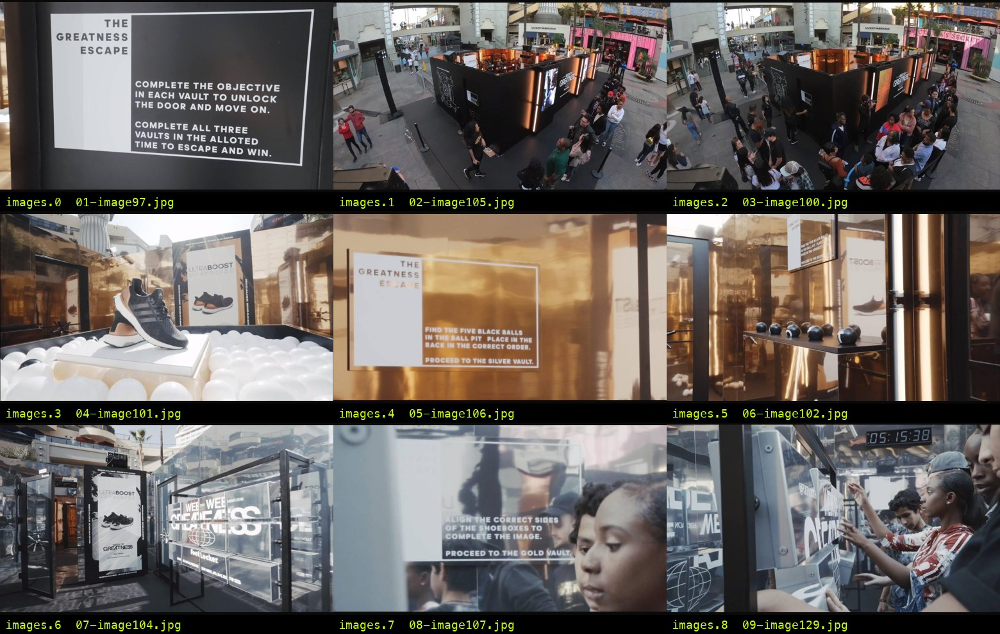
| Index | File | Services | Tech | Conf | Note |
|---|---|---|---|---|---|
| 0 | 01-image97.jpg | multimedia-displays | — | high | wall-mounted digital screen displaying game instructions |
| 1 | 02-image105.jpg | custom-fabrication experiential-events | — | medium | wide shot of custom-built branded escape-room structure with crowd |
| 2 | 03-image100.jpg | custom-fabrication experiential-events | — | medium | wide shot of fabricated activation structure with gold interior and crowd |
| 3 | 04-image101.jpg | custom-fabrication | — | high | branded shoe display pedestal inside gold vault set |
| 4 | 05-image106.jpg | — | — | high | printed instruction graphic on vault wall, no hardware visible |
| 5 | 06-image102.jpg | custom-fabrication | — | high | vault interior with prop shelf and branded gold walls |
| 6 | 07-image104.jpg | custom-fabrication experiential-events | — | medium | glass-walled branded activation structure exterior with banners |
| 7 | 08-image107.jpg | — | — | high | people beside printed instruction panel, no identifiable system |
| 8 | 09-image129.jpg | multimedia-displays | interactive-ui-ux-design | medium | guests manipulating interactive puzzle wall under digital countdown timer |
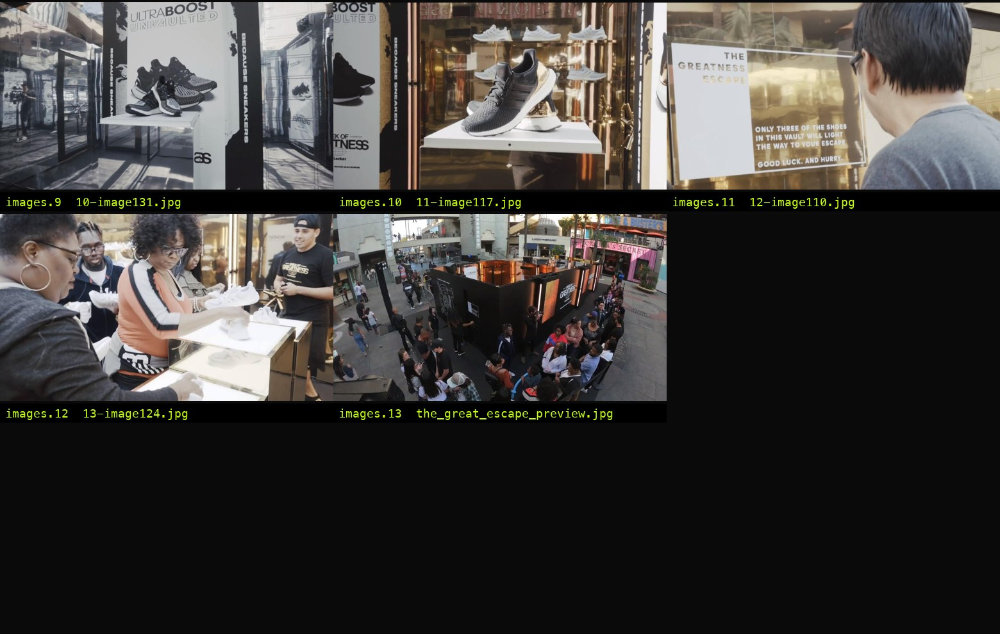
| Index | File | Services | Tech | Conf | Note |
|---|---|---|---|---|---|
| 9 | 10-image131.jpg | custom-fabrication | — | high | branded shoe display pedestals and UltraBoost banners |
| 10 | 11-image117.jpg | custom-fabrication | — | high | shoe display pedestal inside gold-walled vault |
| 11 | 12-image110.jpg | — | — | high | man reading printed instruction graphic |
| 12 | 13-image124.jpg | — | — | high | guests and staff at product table, no identifiable system |
| 13 | the_great_escape_preview.jpg | custom-fabrication experiential-events | — | medium | wide shot of branded activation structure with crowd |